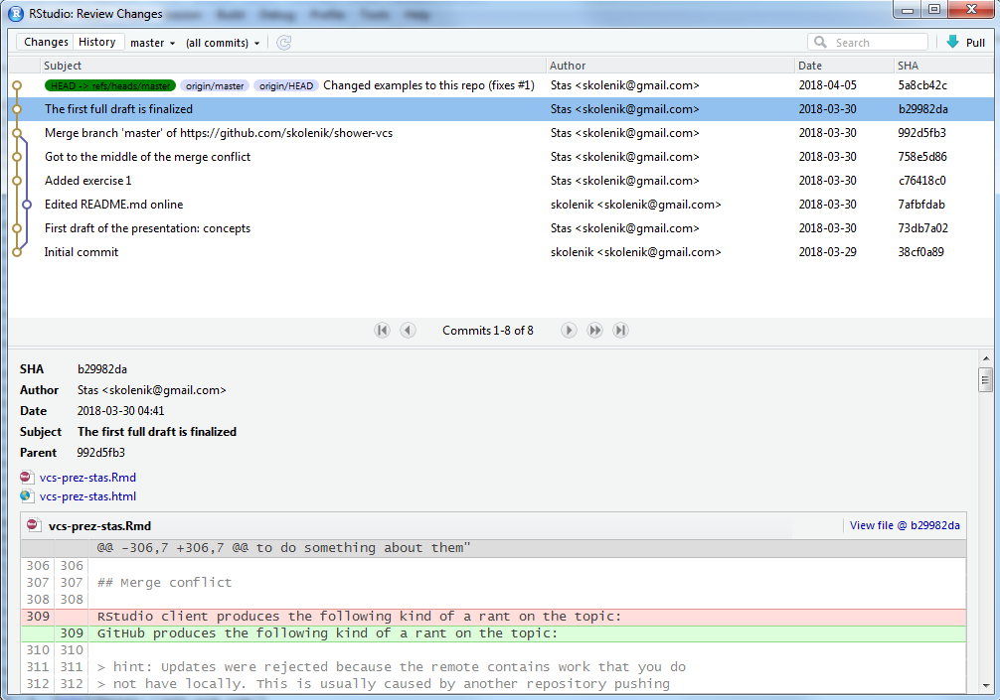

Stas Kolenikov
Wikipedia defines version control as
management of changes to documents, computer programs, large web sites, and other collections of information.
To put it differently, this is a way to retain semblance of sanity when the inputs and the code keeps changing.
The major concepts concerning version control are:
It is easiest to think about repositories as projets. It is best to keep 1:1 relations between them, although you can try more complicated relations with several code repositories within a project, or, worse, a single repository serving different projects.
A repository is a collection of:
A changeset is a record in the repository of the changes that were made to its state.
Each changeset is assigned a random hex string, usually of at least a dozen characters, if not two dozen, to uniquely identify it.
Once the code developer decides they have made a reasonable number of changes,
Commit is the action of adding a changeset to the repository.
In every VCS, a commit message is required to accompany the commit and describe what this commit/changeset achieves.
What’s an appropriate scope for a changeset? Well, ideally, whatever you can describe in one sentence that would be visible when you view your repo!
A matching bracket is fixed in
load_data.py
or can be
Web scraping code is added
which could add 25 files to the repo – but this would still be a good changeset with a specific purpose.
https://github.com/skolenik/shower-vcs/commit/c76418c0e
Go back to the list of commits to see how the commit message is displayed
Distributed VCSs allow different users/developers to work on their part of the project independently. E.g., one team could work on the engine, another on inputs in the user interface, and yet another on the outputs. In analytic projects, some people may be working on data acquisition and cleaning, while others could prepare analysis templates and narratives (in markdown).
Each user can work on their own copy of the repository, making commits to that copy. However, periodically (EOB? end of the week?) everybody need to synchronize their state of the project to make sure that the different pieces really work together. To that effect, distrbiuted VCS have two specific actions: push and pull.
As you can clearly imagine, push/pull operation can easily create conflicts. What if two or more different people made changes between their respective pushes to the master repository? What should the resulting state be after all developers push their code?
The issue is known as merge. Sometimes, merges are clean – i.e., when different people worked on different files, or each file was worked on by one person at a time.
Other times, merges require intervention of a knowledgeable human to determine how the conflicts are to be resolved. Typically, VCS clients (see below) offer meaningful options, e.g., by taking the union of the changes. But sometimes, manual editing may be required when e.g. different developers worked on the same file.

While not necessarily a part of a version control system, issue trackers are a useful addition to them. When you see an email from your IT support titled like “Ticket #1054347: Excel does not open on my computer”, it is generated by the issue tracking system that your IT uses.
In the world of data analytic projects, an analysis plan can be converted to a series of “issues”, with subsequent development of the code addressing, and closing, these issues.
A neat way to bring together the concepts of commits and issues is through markup of commit messages. Typically, the following conventions are understood by the different VCS:
Most modern VCS would be able to parse the message
Commit 45ef0da2c fixes issue # 237: input file is not updated in code/refresh_plot.py
and identify all three components: the changeset, the issue, and the file. Moreover, the issue will get closed/resolved automatically with such a commit message.
https://github.com/skolenik/shower-vcs/issues/1
Check how it got closed by the commit message
There are three major version control systems:
They share the common functionality, and while the differences are mostly in esoteric issues, these differences divide the developers into intensely loyal camps.
But there is more. While version control engines run from command line, there are also neat GUIs, or clients, to visualize the processes — and they cause wars, too.
and many others. They obviously differ somewhat in what they can do, and which of the more complex functions are supported.
Enough said! Let’s go break some things!
Prerequisites:
For a number of reasons, a better workflow is to create a repository online first, and then fold it into your local work. So, create a repository (let’s name it sandbox) on GitHub or BitBucket, depending on where you have an account. You can use the default settings… we will delete this repository anyway. Please make sure that README.md file gets created, though.
The next step is to create the infrastructure for your project locally. This is the clone operation. Find out using your client how this is done. Since this is always the first step in the client, it would be conceptually similar to File/Open, so you should expect to find the relevant buttons/controls somewhere in the upper left corner of the client’s GUI.
In RStudio, you can clone a GitHub repo with File/New Project/Version Control/Git.
Point your client to an empty folder. If you have some code that you are itching to put under version control, we will copy it down at the next step.
x = 1.R, .do, .sas)Go back to your client. (In TortoiseHg, you need to hit “Refresh” button.) Most likely, you will be shown some sort of a display of your folder, with the files that you created or copied. You will most likely see question marks (intended to indicate that your client does not yet know whether you want to add that file to the repo). Clicking on the files, you will see some content.
Select the files with the question marks that you want to be added to the project (maybe all of them if there are more than one). (Git has an intermediate concept of staging; your Git client will have a separate area with the files in the directory, and the “stage” area, and will have a “Stage” button and probably “Stage All” button, too.)
Write a commit message – this can be something optimistic like “My first commit ever!”
The next step would be to push the changes to the server. - You can reasonably expect the relevant button to show an arrow going up. - You will be asked for your GitHub/BitBucket username and password. Enter them.
Go back to your repo online on GitHub/BitBucket, and reload it. Observe where the changes are, and how the server shows them.
Identify the hex ID of the changeset in both the client and on the server. You don’t need it know, but you need to know where to look for one.
This will be a common situation with your repos, so the earlier you learn to deal with it, the better. We will create conflicting commits in different branches of the project, and try to figure out how to deal with them.
Click on README.md file in your repo to edit it. It will probably look like this:
# sandbox
Some descriptionChange the description to “This is my sandbox to play with version control.” Note that you actually have a “Commit” button rather than “Save” button; whatever you edit online gets committed immediately.
Go back to your local version of the repository and make local changes
y = 2Commit the changes – you know how to do that
Try pushing the local changes up the server.
You should get an error message that will probably be cryptic, but it should convey something like “You tried pushing things to the server, but there were some changes there that are not compatible with yours. You need to do something about them”
GitHub produces the following kind of a rant on the topic:
hint: Updates were rejected because the remote contains work that you do not have locally. This is usually caused by another repository pushing to the same ref. You may want to first integrate the remote changes (e.g., ‘git pull …’) before pushing again. See the ‘Note about fast-forwards’ in ‘git push –help’ for details.
It really makes things more complicated than they need be.
Let us try to resolve the issue by working in the local repository. Pull the changes that happened elsewhere. Your client should have the pull button somewhere prominently, and it will likely have a downward pointing arrow. You may be asked for the username and password again.
After the pull, you should get the updated README.md file. That’s where the change was, remember?
Identify the merge control in your client. It will say “Merge”, and it will likely have arrows or lines merging. When you click it, you will see a moderately complex screen showing what the changes have been in the different branches of the project. At the moment, we have a nice, clean merge, with the remote changes confined to README.md, and everything else happening locally with the files that you worked with. Hit “OK” or whatever is needed to finalize the operation. You may or may not have a chance to enter a commit message – it will likely be an automated “Merge”, anyway.
Now that the local repo does not have any conflicts, you can push the neatly merged set of changesets back to the server. Hit the “Push” button, and notice that your client will likely say that it is preparing and pushing several changesets. Go back to the server and validate that all of the changes have propagated.
Please review that you did today. Look again at the changes in the client and on the server (red to show the text taken out; green to show the text that was added.)
This probably covers 80% of what you will be doing, in terms of version control.
Different clients differ in their support of issues. Typically, though, you can manage issues on the server.
This is an R Markdown presentation. Markdown is a simple formatting syntax for authoring HTML, PDF, and MS Word documents. For more details on using R Markdown see http://rmarkdown.rstudio.com.
This presentation is delivered by shower HTML presentation engine.
The GitHub repo where this presentation lives is https://github.com/skolenik/shower-vcs.